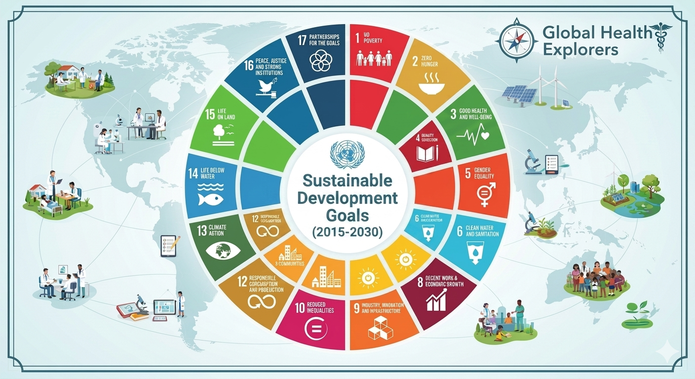

A changing planet, changing health.
Explore how environmental change affects health, communities and future generations.
Explore Learning →YOUNG PEOPLE • GLOBAL HEALTH • ACTION
Global health is not something young people should merely study. It is something they can explore, influence and help improve.
GHE creates pathways for young people to move from curiosity to evidence, from evidence to ideas, and from ideas to responsible action — locally, nationally and globally. Leadership is one part of that journey. Action is the purpose.
WHY YOUNG VOICES MATTER
Young people already learn, question, create, communicate, collaborate and act. GHE provides a structured pathway for those contributions to become informed, responsible and meaningful.
Explore how environmental change affects health, communities and future generations.
Explore Learning →Understand infectious diseases, prevention, health systems and collective responsibility.
Explore Infectious Diseases →Explore how education, income, housing, environment, food and social conditions shape health.
Explore the Pathways →
Connect health with equity, education, sustainability, environment and human development.
Explore Global Health →THE YOUNG VOICES PATHWAY
There is no single way to participate in global health. GHE offers connected pathways through which young people can learn, investigate, contribute, act and grow.
Discover global health questions, topics and challenges.
Learning Pathways → 02Ask meaningful questions and examine evidence.
Explore Research → 03Turn a question into a structured idea or project.
Build a Mini-Proposal → 04Find a pathway to contribute, collaborate or connect.
Find Your Place → 05Develop the skills and character to help others move forward.
Explore Leadership →THE GHE RESPONSIBLE INVESTIGATOR
GHE encourages young people to become more than observers of global health. A responsible investigator asks meaningful questions, examines evidence, listens to people, recognizes uncertainty and considers who may benefit from the work.
You do not need to know everything before you begin. Responsible investigation means learning as you go, seeking guidance when needed and being honest about what the evidence can — and cannot — tell you.
Enter the Research Pathway →SHARE • CREATE • CONTRIBUTE
Contribution can begin with something as simple as a question and grow into evidence, an idea, a project, a partnership or meaningful action.
Ask questions that make people stop, think and look closer.
Share observations and viewpoints that can enrich understanding.
Imagine new approaches to health challenges and opportunities for positive change.
Explore data, identify patterns and communicate what evidence may reveal.
Turn curiosity into a school project, community investigation or research idea.
Connect with teachers, mentors, peers, communities and organizations.
TAKE ACTION
Action means doing something that can contribute to better health, greater equity or a healthier environment. It can happen at many levels.
Apply what you learn to your own health, habits, decisions and understanding.
Help create healthier learning environments, awareness activities or student initiatives.
Work with others on an issue affecting your neighbourhood or community.
Learn how policy, public institutions and health systems shape population health.
Collaborate, communicate and contribute to challenges that cross borders.
It should be informed, responsible, inclusive and directed toward a meaningful benefit.
THE GHE ECOSYSTEM
GHE connects learning, investigation, participation, action, leadership, improvement and recognition.
Explore global health topics and build your knowledge.
Explore Learning → 🔬Ask questions, investigate evidence and learn how research works.
Explore Research → 💡Turn a meaningful question into a structured project idea.
Build Your Proposal → 📊Explore data, investigate questions and develop evidence-informed ideas.
Explore GHBDC → ⚡Move from learning and ideas toward meaningful action for global health.
Take Action → 🌱Develop the skills, character and relationships that strengthen action.
Explore Leadership → 🔄Share ideas and help improve the GHE platform.
Help Build GHE → 🏆Discover how GHE recognizes learning, contribution and responsible leadership.
Explore Recognition →BEYOND THE GHE PLATFORM
GHE also points young people toward selected official youth-engagement resources and participation opportunities. These organizations have their own eligibility, safeguarding and application requirements.
Explore the UN Youth Compass ecosystem and principles for meaningful youth participation in global decision-making.
Explore UN Youth Participation → WHOLearn about WHO's mechanism for engaging young people in global health discussions, advice and co-development.
Explore WHO Youth Council → UNESCOExplore UNESCO's work on meaningful youth engagement across education, science, culture and sustainable development.
Explore UNESCO Youth Engagement → WEFExplore a global network of young changemakers working on community-based solutions to global challenges.
Explore Global Shapers → UNEPExplore UNEP's youth initiative recognizing and supporting young environmental changemakers.
Explore Young Champions → UNICEFExplore UNICEF's approach to listening to young people and integrating their perspectives into research and programmes.
Explore UNICEF Youth Engagement → GFExplore youth engagement in the Global Fund's work on HIV, tuberculosis, malaria and related health priorities.
Explore Global Fund Youth →External opportunities may have different age limits, application periods, selection processes and safeguarding requirements. Always check the official information and, where appropriate, involve a teacher, mentor or responsible adult.
A RESPONSIBLE VOICE
A powerful young voice is not simply the loudest voice. It is a voice that listens, learns, examines evidence and respects people.
Keep asking meaningful questions and remain open to learning.
Distinguish evidence from assumption and examine information critically.
Listen to different experiences, cultures, perspectives and communities.
Consider the consequences of what you investigate, communicate and propose.
THE GHE PROMISE
They should have opportunities to learn, participate and help shape it.
Explore with curiosity.
Investigate with integrity.
Participate with responsibility.
Take action for health.
Lead by helping others move forward.